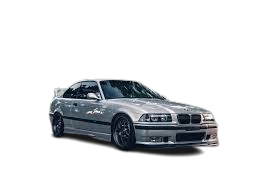

BMW E36
BMW E36 adalah generasi ketiga dari seri 3 BMW, yang diproduksi antara tahun 1990 hingga 2000. Mobil ini dikenal sebagai salah satu model paling ikonik dan revolusioner dalam sejarah BMW karena desainnya yang aerodinamis, performa tinggi, dan keandalannya yang luar biasa. Dengan mengusung filosofi "bahagia di jalanan, sempurna di lintasan balap," E36 hadir dengan berbagai varian yang mencakup model sedan, coupe, convertible, dan wagon. Keberhasilan E36 tak lepas dari penggunaan teknologi canggih pada masanya, termasuk sistem suspensi yang superior, penggerak roda belakang, dan pilihan mesin yang bertenaga, mulai dari mesin 4 silinder hingga mesin 6 silinder yang terkenal dengan karakteristiknya yang halus dan responsif. Selain itu, BMW E36 juga dikenal dengan kualitas konstruksi yang sangat baik, sehingga banyak dari mobil ini yang masih bertahan hingga hari ini sebagai kendaraan klasik yang digemari oleh para penggemar otomotif dan kolektor. Desain eksterior yang elegan, ditambah interior yang nyaman dan berfokus pada pengemudi, membuat E36 menjadi pilihan ideal bagi mereka yang mencari kombinasi antara sportiness dan kenyamanan. Melalui model ini, BMW berhasil memperkenalkan sejumlah inovasi dalam hal keamanan dan kenyamanan, menjadikannya sebagai salah satu mobil yang memberikan pengalaman berkendara yang luar biasa di setiap lintasan, baik di jalan raya maupun di sirkuit.